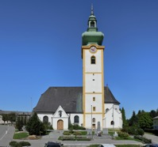
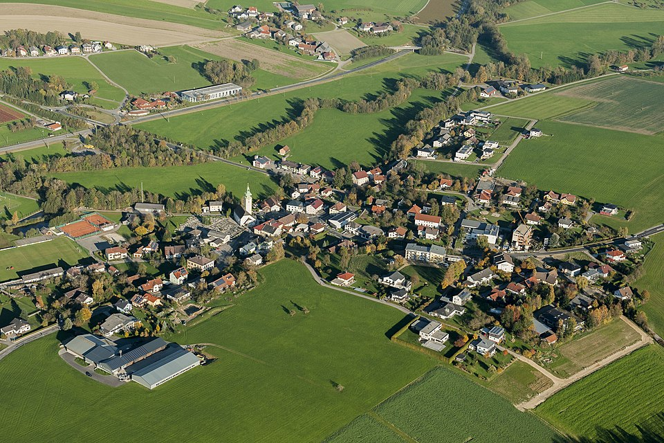
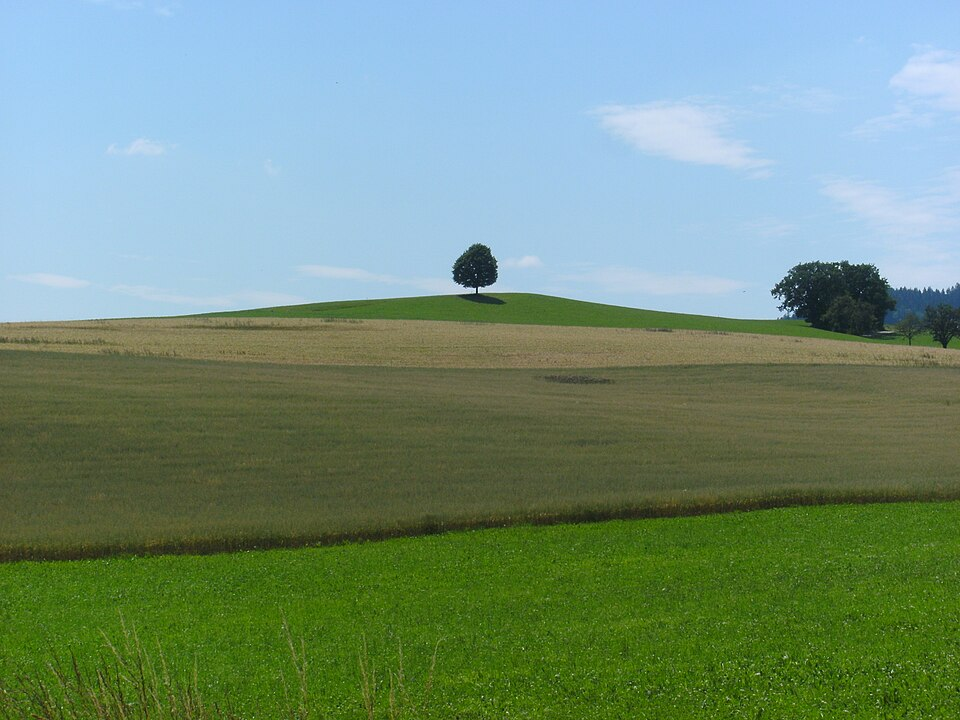
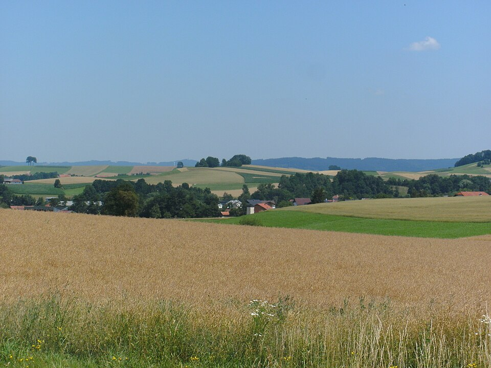

Warum besuchen?
Hohenzell ist ein kleines Dorf mit etwa 1.500 Einwohnern, gelegen in der malerischen Landschaft von Oberösterreich. Es bietet eine ruhige Atmosphäre, freundliche Menschen und eine charmante Umgebung, ideal für einen entspannten Tagesausflug oder einen Wochenendtrip.
Kleiner Reiseplan
Ein Ausflug nach Hohenzell passt gut für alle, die nicht sehr viel sehen möchten und viel Ruhe haben wollen. Am besten startet man bei der Kirche, geht danach durch den Ort und macht eine Pause mit Blick auf die Felder.
- Bei der Kirche ankommen und den Ort ansehen
- Einen Spaziergang entlang der Felder machen
- Eine kleine Pause im Grünen einlegen
- Am Abend die ruhige Stimmung genießen
Das kannst du sehen
- Baum
- Feld
- Straße
- Auto
- Wiese
- Baum
Details
Hohenzell liegt in der Nähe von Ried im Innkreis und ist von Wäldern und Wiesen umgeben. In Hohenzell gibt es sehr viele Bäume und Felder, sowie Traktoren. Außerdem gibt es in Hohenzell eine Kirche und eine Bank.
Bilder
Hier sind ein paar Bilder von Hohenzell und der Umgebung.


